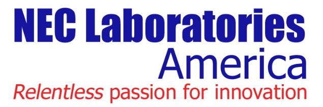

About
Bio
|
I am a third-year Ph.D. student in Computer Engineering at Virginia Tech. I work with Prof. Jia-Bin Huang. My recent research interest lies in designing label-efficient and/or robust visual understanding methods. I also enjoy working on interesting projects that generate visually appealing outputs (e.g., deep generative models, graphics, 3D vision, etc.) Before that, I have worked with Prof. Honglak Lee, Dr. Yuting Zhang and Dr. Ruben Villegas during my masters at University of Michigan, Ann Arbor, and Prof. Xiaojin Gong during my undergrad at Zhejiang University. Over the summers, I am fortunate to have the opportunities to work with Dr. Pan Ji (NEC Labs), Dr. Quoc-Huy Tran (NEC Labs), Dr. Manmohan Chandraker (NEC Labs), Dr. Jimei Yang (Adobe Research), Dr. Duygu Ceylan (Adobe Research), Dr. Jianming Zhang (Adobe Research), and Dr. Federico Perazzi (Adobe Research). My CV is available here (last updated on Nov. 2019). Education 
Aug. 2017 - Present 
Aug. 2015 - Apr. 2017 
Sep. 2011 - Jun. 2015 Industry May. 2020 - Aug. 2020

May. 2019 - Aug. 2019 May. 2018 - Aug. 2018 |

|
Teaching
Teaching Assistant |
ECE 5554 / ECE 4554 (Computer Vision), Fall 2018 [link] |
Teaching Assistant |
ECE 5554 / ECE 4554 (Computer Vision), Fall 2017 [link] [tutorial] [Guest Lecture on Object Detection] |
Professional Activities
Conference Reviewer |
CVPR 2019, ICML 2019, ICCV 2019, BMVC 2019, NeurIPS 2019, AAAI 2020, CVPR 2020, ECCV 2020, NeurIPS 2020 |
Journal Reviewer |
IEEE Access, IJCV, IET Computer Vision, Neurocomputing |
Workshop Reviewer |
AI City Challenge Workshop 2018, 2019 |
Volunteer |
ICLR 2020 |
Presentations
[2020/03] |
"Reducing Footskate in Human Motion Reconstruction with Ground Contact Constraints" at WACV2020, Aspen, Colorado [Slides] |
[2018/09] |
"iCAN: Instance-Centric Attention Network" at 1st Person in Context (PIC) Workshop, Munich, Germany [Slides] |
News
[2020/04] |
I will be a volunteer for ICLR 2020. |
[2020/03] |
I will be an official reviewer for NeurIPS 2020. |
[2020/02] |
I will intern at Google Cloud AI this summer. |
[2019/12] |
One paper on Reducing Visual Artifacts in Human Motion Reconstruction has been accepted to WACV. See you in Aspen! |
[2019/11] |
I will be an official reviewer for ECCV 2020. |